Universidad de Sonora
Facultad de Ciencias Económicas y Administrativas
Departamento de Administración
Doctorado en Ciencias Económicas y Administrativas
Procesamiento y análisis de datos
Navega con → ← · Bloques con M · Tema con T · Pantalla completa con F
Capítulos 11–12 · χ² · Introducción
De la distribución que le da nombre a la prueba de independencia entre variables, y de ahí a un ejercicio real hecho paso a paso en SPSS.
Capítulo 11 — qué es, de dónde sale, cómo se calcula.
Capítulo 12 — ¿dos variables están relacionadas?
Un ejercicio guiado, paso a paso.
Usa las flechas ← → del teclado, los botones inferiores o desliza para avanzar.
Imagina que mides la estatura de todos tus compañeros de salón y anotas cuántos miden cada altura. Si dibujas esos datos en una gráfica de barras, vas a obtener una forma: algunas alturas se repiten mucho (las de en medio) y otras casi no aparecen (las muy altas o muy bajas).
Esa forma que toman los datos cuando los ordenas y los cuentas es lo que en estadística llamamos distribución. Es simplemente: "¿qué tan seguido aparece cada valor posible?"
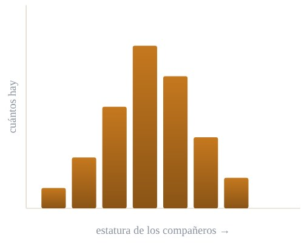
Le preguntamos a 30 niños cuál es su fruta favorita, de entre 5 opciones. Aquí no hay números que promediar — solo categorías que contamos:
| Fruta favorita | Manzana | Plátano | Fresa | Uva | Durazno | Total |
|---|---|---|---|---|---|---|
| Niños (frecuencia) | 2 | 4 | 11 | 8 | 5 | 30 |
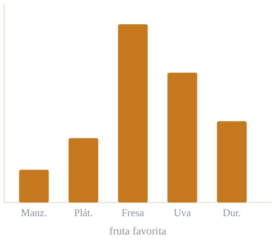
La mayoría de los niños (11 de 30) eligió fresa — esa es la barra más alta, la categoría "más común". Muy pocos eligieron manzana (2 niños) o durazno (5 niños). Fíjate que aquí no existe un orden numérico entre las categorías — "fresa" no es "más" que "uva", simplemente se repite más veces. Contar frecuencias por categoría, en vez de promediar números, es justo el tipo de dato con el que trabaja la prueba chi-cuadrado.
La estatura da una forma de "campana" (la famosa distribución normal). Pero hay datos que no son números que se puedan promediar, sino categorías: color de ojos, sabor favorito de helado, si alguien fuma o no.
¿Cómo comparamos "lo que observamos" contra "lo que esperaríamos" cuando trabajamos con categorías y conteos, y no con promedios? Para eso necesitamos una distribución especial: la chi-cuadrado (χ²).
Se resumen con promedio y desviación → usan la distribución normal.
Se resumen contando frecuencias → aquí es donde entra χ².
Compara conteos observados contra conteos esperados.
La distribución chi-cuadrado nace de una idea muy simple: tomar varios valores que siguen una distribución normal "estándar", elevarlos al cuadrado y sumarlos.
Donde cada Z es una medición "normalizada" (como una calificación puesta en una escala común) y k es cuántas Z estamos sumando.
Al elevar al cuadrado, todo se vuelve positivo — ahí nace una de sus características más importantes. Fue Karl Pearson quien, alrededor de 1900, formalizó su uso para comparar frecuencias observadas contra frecuencias esperadas, dando origen a la prueba que hoy lleva su nombre.
Imagina que mides qué tan lejos cayó cada dardo del centro de un blanco. Si un dardo cae a la izquierda (número negativo) y otro a la derecha (número positivo), y los sumas tal cual, se podrían cancelar. Pero si elevas cada distancia al cuadrado antes de sumar, ya no importa el lado: solo importa "qué tan lejos" cayó. Eso es exactamente lo que hace la χ²: convierte diferencias en "qué tan lejos estamos de lo esperado", sin que se cancelen entre sí.
Como nace de sumar números al cuadrado, sus valores van de 0 hasta el infinito. Nunca vas a ver un χ² negativo.
No es una campana perfecta como la normal: tiene una "cola" larga que se extiende hacia la derecha.
Existe una curva distinta para cada valor de grados de libertad (k). Por eso se dice que es una "familia" de distribuciones.
A medida que aumentan los grados de libertad, la curva se vuelve más simétrica y se parece cada vez más a una campana normal.
Sin importar la forma exacta, la χ² siempre mide lo mismo: qué tan lejos está lo observado de lo esperado.
Los grados de libertad son el único "control" que necesita la distribución χ² para saber qué forma tomar. Se representan con la letra k (o a veces gl o df, de "degrees of freedom").
Imagina 5 asientos y 5 amigos que deben sentarse. Los primeros 4 amigos pueden elegir libremente dónde sentarse. Pero el último amigo ya no tiene opción: le queda el único asiento libre. Ahí tuvo 4 "grados de libertad", no 5, porque el último valor queda determinado por los anteriores.
En estadística pasa lo mismo: si conoces el total de una tabla y todas las categorías menos una, la última "no es libre": se puede calcular. Los grados de libertad cuentan cuántos valores sí pueden variar libremente.
Depende del tipo de prueba chi-cuadrado:
| Tipo de prueba | Fórmula de k |
|---|---|
| Bondad de ajuste | k = categorías − 1 |
| Independencia (tabla de contingencia) | k = (filas − 1)·(columnas − 1) |
Vamos a usar ambas fórmulas más adelante con ejemplos reales.
Mueve el control para ver cómo cambia la curva. Fíjate cómo, con pocos grados de libertad, es muy asimétrica y pegada a la izquierda; y cómo, con muchos, se va pareciendo a una campana normal.
Grados de libertad (k) = 3 · k=1 k=2 k=4 k=8 k=16 k=24
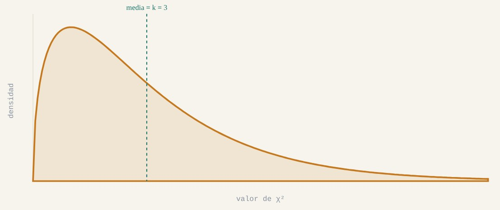
Es una prueba pensada para variables cualitativas o categóricas: se usa muchísimo en ciencias sociales, medicina, mercadotecnia y administración — encuestas, diagnósticos, preferencias de consumo, etc.
Prueba de independencia: comprueba si dos variables categóricas están relacionadas entre sí. Ejemplo: ¿el género influye en la preferencia por el café? La exploramos a fondo en el Bloque 2.
La idea central, en una sola frase para recordar siempre:
Comparar lo que realmente observamos (frecuencia observada, fo) contra lo que esperaríamos ver si no hubiera ningún patrón especial (frecuencia esperada, fe).
Si lo observado se parece mucho a lo esperado, la diferencia es pequeña → χ² pequeño → no hay evidencia de que pase algo raro. Si lo observado se aleja mucho de lo esperado, la diferencia es grande → χ² grande → sí parece haber un patrón o relación real.
Piensa en χ² como un detective que compara "lo que dice la evidencia" (los datos observados) contra "lo que se esperaría si no hubiera ningún culpable" (el escenario neutral). Mientras más grande sea la sospecha (la diferencia), más convencido está el detective de que algo sí está pasando.
Para cada grupo de datos: 1) resta lo que viste menos lo que esperabas, 2) eleva el resultado al cuadrado para que no sea negativo, 3) divide entre lo que esperabas para que sea "justo" comparar grupos grandes con chicos, y 4) suma todos esos resultados. El número final te dice qué tan "sorprendido" deberías estar con tus datos.
Para decidir si el resultado es "sospechoso" o no, comparamos nuestro χ² calculado contra un valor crítico que sale de tablas ya elaboradas, según:
| Comparación | Decisión |
|---|---|
| χ² < χ²crítico | No se rechaza H0 (no hay relación / se ajusta) |
| χ² ≥ χ²crítico | Se rechaza H0 (sí hay relación / no se ajusta) |
H0 es la "hipótesis nula": la afirmación de que no pasa nada especial (independencia, o buen ajuste). La comparamos contra H1, la hipótesis alternativa.
Preguntamos a 120 personas cuál es su color favorito, de entre 6 opciones. Si no hubiera ningún color favorito (todos igual de populares), esperaríamos que cada uno fuera elegido el mismo número de veces: 120 ÷ 6 = 20 veces cada uno (fe).
H0: no hay un color favorito — la preferencia se reparte por igual entre los 6 colores.
Ha: sí hay un color favorito — la preferencia no se reparte por igual entre los 6 colores.
| Color | Rojo | Azul | Verde | Amarillo | Morado | Naranja |
|---|---|---|---|---|---|---|
| Observado (fo) | 18 | 22 | 16 | 25 | 19 | 20 |
| Esperado (fe) | 20 | 20 | 20 | 20 | 20 | 20 |
Aplicamos la fórmula para cada color y sumamos:
= 0.2 + 0.2 + 0.8 + 1.25 + 0.05 + 0 = 2.5
k = categorías − 1 = 6 − 1 = 5
Buscando en una tabla de χ² crítico con k=5 y α=0.05, el valor crítico es aproximadamente 11.07.
Como 2.5 < 11.07, no se rechaza H0: no hay evidencia de que exista un color favorito, las pequeñas diferencias se explican por azar.
Es una forma de usar la distribución χ² para responder una pregunta muy concreta: ¿dos variables categóricas están relacionadas entre sí, o son completamente independientes?
Por ejemplo: ¿el género de una persona está relacionado con su preferencia por el café? ¿O son cosas que no tienen nada que ver una con la otra?
Imagina que quieres saber si el mes en que naciste tiene algo que ver con tu materia favorita en la escuela. Si agruparas a tus compañeros por mes de nacimiento y por materia favorita, y comparas esos conteos contra lo que esperarías si no hubiera ninguna relación, estarías haciendo justo esto: comparar si dos variables categóricas (mes de nacimiento, materia favorita) van de la mano o son independientes.
¿Está relacionado el tipo de tratamiento con la mejoría del paciente, o el resultado es independiente de qué tratamiento recibió?
¿La edad del cliente está relacionada con la marca que prefiere, o compran por igual sin importar su edad?
¿El nivel educativo está relacionado con el tipo de empleo, o son variables que no dependen una de la otra?
Los datos deben estar agrupados en frecuencias (conteos), y la muestra debe ser suficientemente grande: como regla práctica, cada casilla de la tabla debería tener una frecuencia esperada de al menos 5. Si hay casillas con menos de 5, conviene combinarlas con otras categorías.
Es una tabla donde cruzamos las dos variables categóricas y anotamos cuántos casos hay en cada combinación.
Ejemplo: queremos saber si el género está relacionado con la preferencia por el café, en una muestra de 100 personas.
| Le gusta el café | No le gusta el café | Total fila | |
|---|---|---|---|
| Hombres | 21 | 15 | 36 |
| Mujeres | 26 | 38 | 64 |
| Total columna | 47 | 53 | 100 |
Fuente del ejemplo: Lifeder — "Chi-cuadrado (χ²): distribución, cómo se calcula, ejemplos".
H0: el género y la preferencia por el café son independientes.
H1: el gusto por el café está relacionado con el género.
| Celda | Cálculo | fe |
|---|---|---|
| Hombres · Sí | (36 × 47) / 100 | 16.92 |
| Mujeres · Sí | (64 × 47) / 100 | 30.08 |
| Hombres · No | (36 × 53) / 100 | 19.08 |
| Mujeres · No | (64 × 53) / 100 | 33.92 |
Aplicamos la misma fórmula de siempre, celda por celda, y sumamos:
= 0.9838 + 0.5534 + 0.8725 + 0.4908 = 2.9005
2.9 es un número relativamente pequeño: quiere decir que lo observado (21, 26, 15, 38) no se aleja mucho de lo esperado (16.92, 30.08, 19.08, 33.92). Todavía nos falta compararlo contra el valor crítico para tomar la decisión final.
| Comparación | Decisión |
|---|---|
| χ² < χ²crítico | No se rechaza H0 (independientes) |
| χ² ≥ χ²crítico | Se rechaza H0 (sí hay relación) |
Buscando en la tabla de χ² con k=1 y α=0.05, obtenemos: χ²crítico = 3.841
χ² calculado = 2.9005
χ²crítico = 3.841
Como 2.9005 < 3.841 → no se rechaza H0.
Con un nivel de significancia del 5%, la preferencia por el café no está relacionada con el género de la persona: las diferencias que vimos en la tabla se explican razonablemente por azar, no por una relación real entre ambas variables.
La empresa produce y distribuye tres tipos de cerveza: ligera, clara y oscura. Al analizar los segmentos de mercado de las tres bebidas, el grupo de investigación de mercados se preguntó si la inclinación de los consumidores por estos tipos de cerveza difería entre hombres y mujeres.
Se usó una prueba de independencia para determinar si la preferencia por un tipo de cerveza (ligera, clara u oscura) era independiente del género del consumidor (hombre o mujer). Las hipótesis fueron las siguientes:
H0: la preferencia por un tipo de cerveza es independiente del género del consumidor.
H1: la preferencia por un tipo de cerveza no es independiente del género del consumidor.
Si las preferencias son independientes del género → una sola campaña publicitaria para todas las cervezas.
Si las preferencias dependen del género → ajustar las promociones para distintos mercados meta.
Suponga que se toma una muestra aleatoria simple de 150 consumidores. Cada individuo de la muestra prueba los tres tipos de cerveza y después se le pide que indique cuál prefiere o cuál es su primera elección.
En la tabulación cruzada se presenta el resumen de las respuestas recabadas en el estudio (frecuencias observadas):
| Ligera | Clara | Oscura | Total | |
|---|---|---|---|---|
| Hombre | 20 | 40 | 20 | 80 |
| Mujer | 30 | 30 | 10 | 70 |
| Total | 50 | 70 | 30 | 150 |
1) Las frecuencias esperadas de cada celda. 2) El estadístico de prueba χ². 3) Los grados de libertad. 4) Comparen su χ² contra el valor crítico (α = 0.05) y concluyan si se rechaza o no H0. Usen los mismos pasos que vimos con el ejemplo del café.
Bajo el supuesto de H0 (independencia), la frecuencia esperada de cada celda se calcula así:
Por ejemplo, para "Hombre · Clara": e12 = (80)(70)/150 = 37.33.
| Ligera | Clara | Oscura | Total | |
|---|---|---|---|---|
| Hombre | 26.67 | 37.33 | 16.00 | 80 |
| Mujer | 23.33 | 32.67 | 14.00 | 70 |
| Total | 50.00 | 70.00 | 30.00 | 150 |
| Género | Cerveza | fij | eij | fij−eij | (fij−eij)²/eij |
|---|---|---|---|---|---|
| Hombre | Ligera | 20 | 26.67 | −6.67 | 1.67 |
| Hombre | Clara | 40 | 37.33 | 2.67 | 0.19 |
| Hombre | Oscura | 20 | 16.00 | 4.00 | 1.00 |
| Mujer | Ligera | 30 | 23.33 | 6.67 | 1.90 |
| Mujer | Clara | 30 | 32.67 | −2.67 | 0.22 |
| Mujer | Oscura | 10 | 14.00 | −4.00 | 1.14 |
| Total | χ² = 6.12 | ||||
Como con la tabla de contingencia, la prueba de independencia siempre es de cola superior.
| Área cola sup. | 0.05 | 0.025 |
|---|---|---|
| Valor χ² (2 gl) | 5.991 | 7.378 |
χ² = 6.12 cae entre 5.991 y 7.378 → valor-p entre 0.025 y 0.05. El valor exacto (Excel) es 0.0469.
| Sig. (p) | Decisión |
|---|---|
| p ≤ 0.05 | Rechazar H0 (sí hay relación) |
| p > 0.05 | No rechazar H0 (independientes) |
Como el valor-p = 0.0469 ≤ α = 0.05, se rechaza H0.
La preferencia por un tipo de cerveza no es independiente del género del consumidor. Alber's Brewery debería ajustar sus promociones a diferentes mercados meta, en lugar de usar una sola campaña para todos.
Observando las tablas: los hombres prefieren la clara y la oscura más de lo esperado; las mujeres prefieren la ligera más de lo esperado.
Expected counts printed below observed
Light Regular Dark Total
1 20 40 20 80
26.67 37.33 16.00
2 30 30 10 70
23.33 32.67 14.00
Total 50 70 30 150
Chi-Sq = 6.122, DF = 2, P-Value = 0.047
Nota importante del libro: el procedimiento requiere una frecuencia esperada de al menos 5 en cada categoría; si alguna es menor, conviene combinar categorías adyacentes.
SPSS puede calcular el número por ti, pero no puede decidir qué pregunta responder. Definir bien la pregunta y las hipótesis antes de tocar el software es lo que le da sentido al resultado que vas a obtener.
En la tabla titulada "Pruebas de chi-cuadrado", fíjate en la fila "Chi-cuadrado de Pearson" y revisa tres columnas:
| Sig. (p) | Decisión |
|---|---|
| p ≤ 0.05 | Rechazar H0 (sí hay relación) |
| p > 0.05 | No rechazar H0 (independientes) |
Usar el valor p es equivalente a comparar χ² contra χ²crítico — SPSS ya hace esa comparación por ti.
Tratar una variable categórica como "Escala" hace que Tablas cruzadas no la agrupe correctamente.
Si SPSS avisa que un porcentaje alto de casillas tiene frecuencia esperada menor a 5, la prueba pierde fiabilidad: agrupa categorías.
El valor de χ² por sí solo no basta: siempre debes compararlo contra el crítico o revisar directamente la significancia (Sig.).
Antes de reportar un resultado, revisa siempre la nota al pie de la tabla de SPSS: ahí indica cuántas casillas (si las hay) tienen una frecuencia esperada inferior a 5, lo cual te avisa si conviene ajustar tu tabla de contingencia.
En un estudio realizado por Zogby International para el Democrat and Chronicle, se entrevistó a más de 700 habitantes del estado de Nueva York para determinar si su gobierno estatal funcionaba bien. Se les preguntó sobre reducciones en la remuneración de los legisladores, restricciones al cabildeo, límites de mandato, y si los ciudadanos podían incluir sus temas en las consultas ciudadanas.
En un estudio subsecuente se entrevistó a 100 individuos de la región oeste de Nueva York. De cada uno se registró su afiliación partidista (demócrata, independiente o republicano) y sus respuestas Sí/No a tres preguntas: 1) reducir el sueldo a los legisladores, 2) más restricciones al cabildeo, y 3) límites al número de años del mandato. Las respuestas se codificaron con 1 = Sí y 2 = No.
La base completa está disponible en el archivo descargable NYReform.xlsx (100 registros, listo para abrir en SPSS o Excel).
Pregunta a resolver: usando α = 0.05, ¿existe una asociación entre la afiliación partidista y la opinión sobre reducir el sueldo a los legisladores?
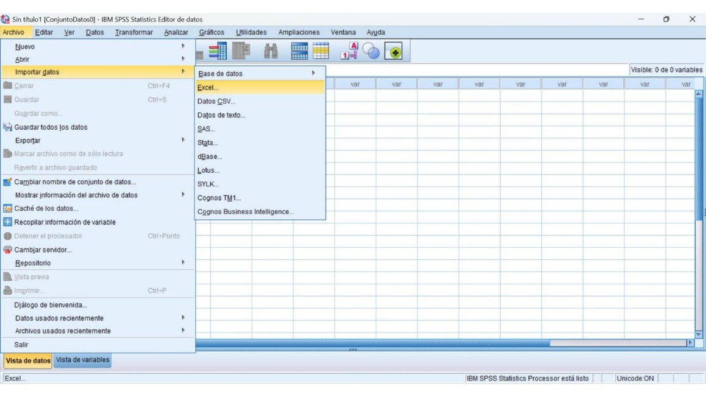
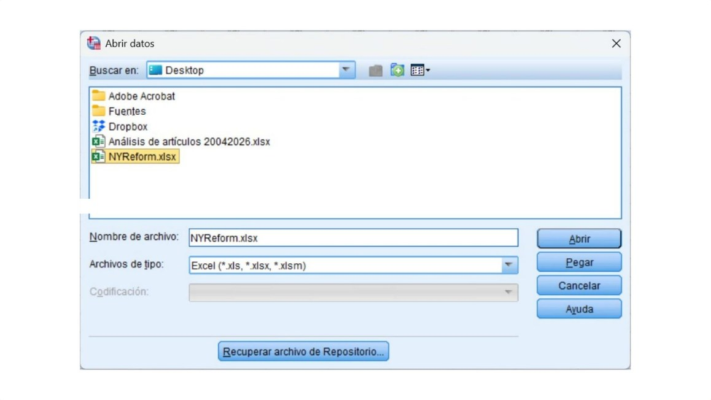
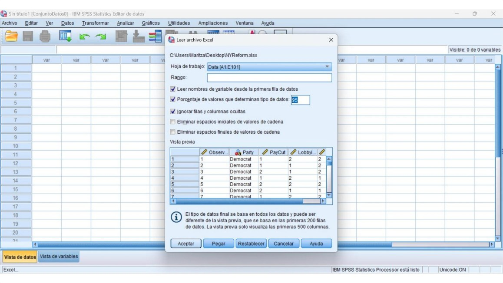
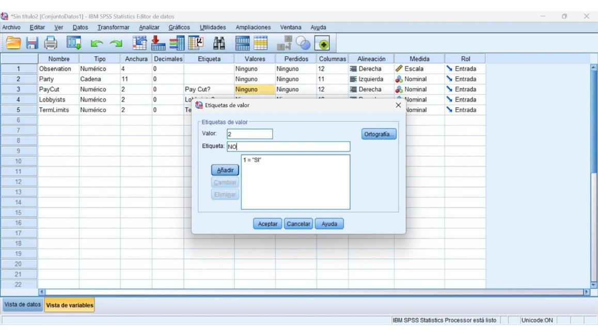
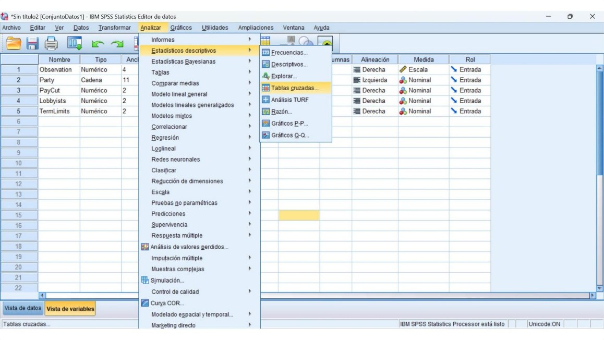
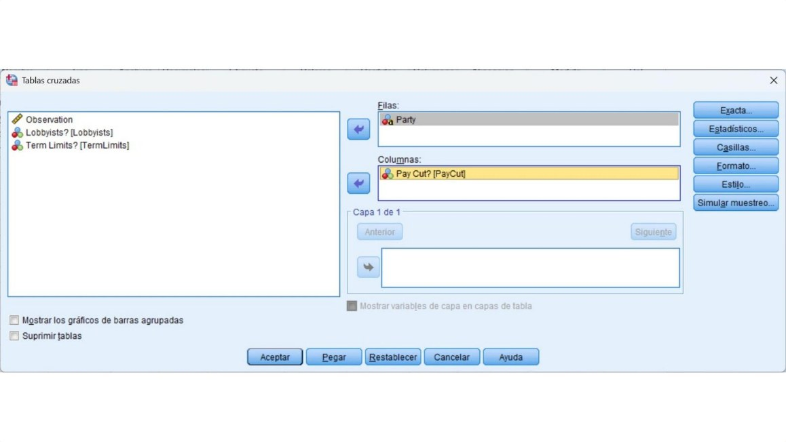
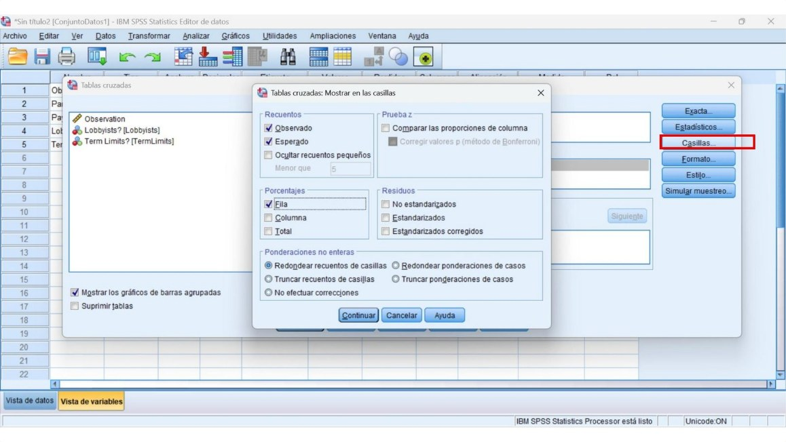
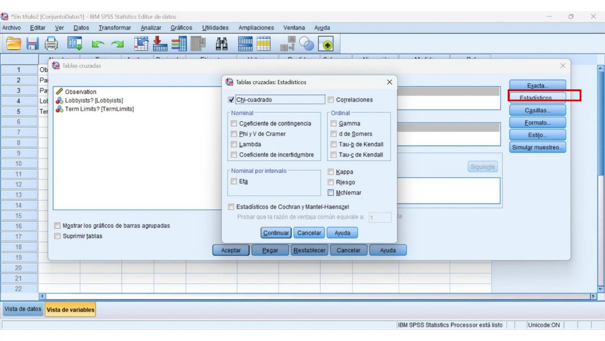
| Casos | ||||||
|---|---|---|---|---|---|---|
| Válido | Perdido | Total | ||||
| N | Porcentaje | N | Porcentaje | N | Porcentaje | |
| Party * Pay Cut? | 100 | 100.0% | 0 | 0.0% | 100 | 100.0% |
| SI | NO | Total | ||
|---|---|---|---|---|
| Party | Democrat | 22 | 14 | 36 |
| Independent | 10 | 9 | 19 | |
| Republican | 39 | 6 | 45 | |
| Total | 71 | 29 | 100 | |
| SI | NO | Total | |||
|---|---|---|---|---|---|
| Party | Democrat | Recuento | 22 | 14 | 36 |
| Recuento esperado | 25.6 | 10.4 | 36.0 | ||
| % dentro de Party | 61.1% | 38.9% | 100.0% | ||
| Independent | Recuento | 10 | 9 | 19 | |
| Recuento esperado | 13.5 | 5.5 | 19.0 | ||
| % dentro de Party | 52.6% | 47.4% | 100.0% | ||
| Republican | Recuento | 39 | 6 | 45 | |
| Recuento esperado | 32.0 | 13.1 | 45.0 | ||
| % dentro de Party | 86.7% | 13.3% | 100.0% | ||
| Total | Recuento | 71 | 29 | 100 | |
| Recuento esperado | 71.0 | 29.0 | 100.0 | ||
| % dentro de Party | 71.0% | 29.0% | 100.0% | ||
| Valor | df | Significación asintótica (bilateral) | |
|---|---|---|---|
| Chi-cuadrado de Pearson | 10.187a | 2 | .006 |
| Razón de verosimilitud | 10.689 | 2 | .005 |
| N de casos válidos | 100 |
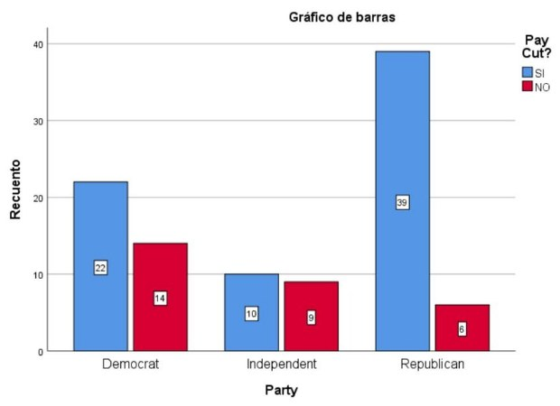
Como (p=0.006<0.05), se rechaza la hipótesis nula de independencia.
Por lo tanto, se concluye que existe una asociación estadísticamente significativa entre las dos variables analizadas; es decir, no son independientes.
| Casos | ||||||
|---|---|---|---|---|---|---|
| Válido | Perdido | Total | ||||
| N | Porcentaje | N | Porcentaje | N | Porcentaje | |
| Party * Lobbyists? | 100 | 100.0% | 0 | 0.0% | 100 | 100.0% |
| SI | NO | Total | ||
|---|---|---|---|---|
| Party | Democrat | 21 | 15 | 36 |
| Independent | 15 | 4 | 19 | |
| Republican | 34 | 11 | 45 | |
| Total | 70 | 30 | 100 | |
| SI | NO | Total | |||
|---|---|---|---|---|---|
| Party | Democrat | Recuento | 21 | 15 | 36 |
| Recuento esperado | 25.2 | 10.8 | 36.0 | ||
| % dentro de Party | 58.3% | 41.7% | 100.0% | ||
| Independent | Recuento | 15 | 4 | 19 | |
| Recuento esperado | 13.3 | 5.7 | 19.0 | ||
| % dentro de Party | 78.9% | 21.1% | 100.0% | ||
| Republican | Recuento | 34 | 11 | 45 | |
| Recuento esperado | 31.5 | 13.5 | 45.0 | ||
| % dentro de Party | 75.6% | 24.4% | 100.0% | ||
| Total | Recuento | 70 | 30 | 100 | |
| Recuento esperado | 70.0 | 30.0 | 100.0 | ||
| % dentro de Party | 70.0% | 30.0% | 100.0% | ||
| Valor | df | Significación asintótica (bilateral) | |
|---|---|---|---|
| Chi-cuadrado de Pearson | 3.719a | 2 | .156 |
| Razón de verosimilitud | 3.661 | 2 | .160 |
| N de casos válidos | 100 |
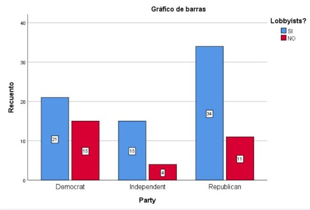
Como (p=0.156>0.05), no se rechaza la hipótesis nula de independencia.
Por lo tanto, no existe evidencia estadística suficiente para afirmar que las dos variables analizadas estén asociadas.
| Casos | ||||||
|---|---|---|---|---|---|---|
| Válido | Perdido | Total | ||||
| N | Porcentaje | N | Porcentaje | N | Porcentaje | |
| Party * Term Limits? | 100 | 100.0% | 0 | 0.0% | 100 | 100.0% |
| SI | NO | Total | ||
|---|---|---|---|---|
| Party | Democrat | 17 | 19 | 36 |
| Independent | 10 | 9 | 19 | |
| Republican | 32 | 13 | 45 | |
| Total | 59 | 41 | 100 | |
| SI | NO | Total | |||
|---|---|---|---|---|---|
| Party | Democrat | Recuento | 17 | 19 | 36 |
| Recuento esperado | 21.2 | 14.8 | 36.0 | ||
| % dentro de Party | 47.2% | 52.8% | 100.0% | ||
| Independent | Recuento | 10 | 9 | 19 | |
| Recuento esperado | 11.2 | 7.8 | 19.0 | ||
| % dentro de Party | 52.6% | 47.4% | 100.0% | ||
| Republican | Recuento | 32 | 13 | 45 | |
| Recuento esperado | 26.6 | 18.5 | 45.0 | ||
| % dentro de Party | 71.1% | 28.9% | 100.0% | ||
| Total | Recuento | 59 | 41 | 100 | |
| Recuento esperado | 59.0 | 41.0 | 100.0 | ||
| % dentro de Party | 59.0% | 41.0% | 100.0% | ||
| Valor | df | Significación asintótica (bilateral) | |
|---|---|---|---|
| Chi-cuadrado de Pearson | 5.112a | 2 | .078 |
| Razón de verosimilitud | 5.186 | 2 | .075 |
| N de casos válidos | 100 |
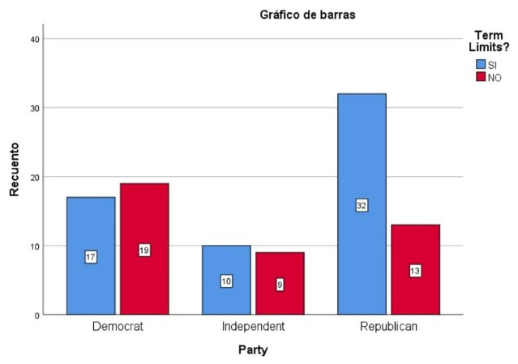
Como (p=0.078>0.05), no se rechaza la hipótesis nula de independencia.
Por lo tanto, no existe evidencia estadística suficiente para afirmar que las dos variables analizadas estén asociadas.
— Tarea
La base de datos Student Performance, elaborada por Paulo Cortez y disponible en el repositorio de aprendizaje automático de la Universidad de California en Irvine (UCI), contiene información de 649 estudiantes de educación secundaria de dos escuelas portuguesas.
Los datos fueron recopilados mediante cuestionarios y registros escolares, e incluyen características demográficas, familiares, sociales y académicas: sexo, tipo de domicilio, apoyo educativo, acceso a Internet, participación en actividades extracurriculares, entre otras.
Cortez, P. (2008). Student Performance [Dataset]. UCI Machine Learning Repository. archive.ics.uci.edu/dataset/320/student+performance — doi.org/10.24432/C5TG7T
Con esta información, resuelve los dos ejercicios de las siguientes láminas usando SPSS y los mismos pasos que practicamos en clase.
— Tarea · Ejercicio 1
¿Existe una asociación estadísticamente significativa entre el sexo de los estudiantes y su participación en actividades extracurriculares?
H0: el sexo y la participación en actividades extracurriculares son independientes.
Ha: el sexo y la participación en actividades extracurriculares están asociados.
— Tarea · Ejercicio 2
¿Existe una asociación estadísticamente significativa entre el domicilio de los estudiantes y tener internet en casa?
H0: el domicilio y el internet en casa son independientes.
Ha: el domicilio y el internet en casa están asociados.
— Artículo científico
Hardwicke, J., Baxter, B. A., Gamble, T., & Hurst, H. T. (2022). An investigation into helmet use, perceptions of sports-related concussion, and seeking medical care for head injury amongst competitive cyclists. International Journal of Environmental Research and Public Health, 19(5), 2861.
doi.org/10.3390/ijerph19052861
Los autores investigaron las percepciones de 405 ciclistas competitivos (edad promedio 43 años, de distintos sexos, disciplinas y niveles competitivos), quienes respondieron una encuesta en línea sobre:
Hábitos y disposición a usarlo aunque no fuera obligatorio.
Si el casco protege realmente contra conmociones cerebrales.
Si buscarían atención médica tras un golpe en la cabeza.
También se exploró la influencia de la publicidad en la decisión de compra del casco.
— Artículo científico
Los datos se analizaron en IBM SPSS Statistics v.26. Se usaron pruebas de chi-cuadrada para ver si las respuestas de la encuesta estaban relacionadas con cuatro características de los participantes:
| Variable 1 | Variable 2 |
|---|---|
| Grupo de edad | Respuesta a las preguntas |
| Sexo | Respuesta a las preguntas |
| Disciplina ciclista | Respuesta a las preguntas |
| Nivel competitivo | Respuesta a las preguntas |
H0: la intención de usar casco es independiente de la edad.
Ha: la intención de usar casco está relacionada con la edad.
Grupos de edad: 18–30, 31–49 y 50 años o más · α = 0.05
— Artículo científico
¿Usaría casco en una competencia aunque no fuera obligatorio? Las respuestas afirmativas, por grupo de edad:
| Grupo de edad | Usaría casco |
|---|---|
| 18–30 años | 100.0% |
| 31–49 años | 96.4% |
| 50 años o más | 90.4% |
χ² = 10.752, valor-p = 0.004. Como p = 0.004 ≤ α = 0.05, se rechaza H0: existe una asociación estadísticamente significativa entre la edad y la intención de usar casco. El grupo de 50 años o más mostró menor intención de usarlo cuando no era obligatorio.
Importante: esto no significa que cumplir 50 años "cause" que alguien deje de usar casco — la prueba solo muestra que, en esta muestra, las variables no se comportaron como completamente independientes.
— Artículo científico
| Variables comparadas | χ² | valor-p | Hallazgo |
|---|---|---|---|
| Disciplina y uso voluntario del casco | 39.956 | 0.001 | Ciclistas de larga distancia/audax: menor intención de usarlo |
| Disciplina y saber que el casco no evita conmociones | 30.681 | 0.013 | BMX y larga distancia acertaron más |
| Disciplina y percepción de protección cerebral | 29.787 | 0.015 | — |
| Disciplina e influencia de la publicidad | 33.265 | 0.006 | Larga distancia: menos influenciados |
| Edad e influencia de la publicidad | 11.891 | 0.018 | 18–30 años: los más influenciados |
Este artículo muestra, con datos reales publicados en una revista científica, exactamente el mismo procedimiento que practicamos hoy: plantear H0/Ha, cruzar variables categóricas, obtener χ² y un valor-p en SPSS, y decidir si rechazar o no la hipótesis nula — con las mismas reglas (α = 0.05) que usamos con Alber's Brewery y con la reforma de Nueva York.
Materiales de la sesión
Abren directo en SPSS con Archivo → Abrir → Datos.
Universidad de Sonora · Doctorado en Ciencias Económicas y Administrativas
Pulsa cualquier bloque para volver a él. También funcionan las teclas 1 a 7.
Maritza Moreno Grano · Procesamiento y análisis de datos · 1 de octubre de 2026
Pulsa el número del bloque para saltar directo · M o Esc para volver